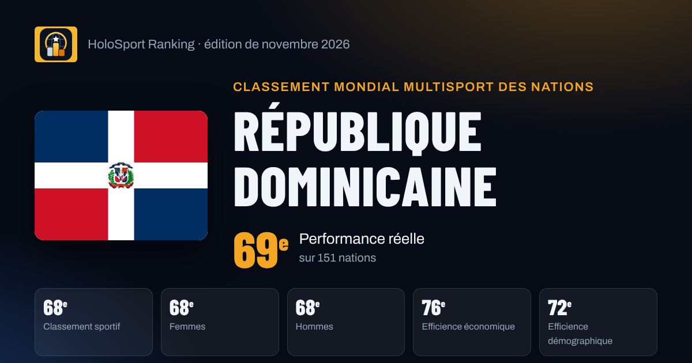

République dominicaine au classement mondial multisport
République dominicaine est 69e nation mondiale de la performance réelle HSR (novembre 2026) et 68e du classement sportif, tous sports confondus. Points forts : Volleyball, Baseball, Basketball.

69ePerformance réelle
68eClassement sportif
68eFemmes
68eHommes
76eEfficience économique
72eEfficience démographique
Ses meilleurs sports
Points obtenus sur les 1000 de chaque fédération, et apport au score après pondération par le poids du sport. Score total : 166 points dans 6 sports.
| Sport | Points / 1000 | Apport au score |
|---|---|---|
| Volleyball FIVB | 14,8 | 42,7 |
| Baseball WBSC | 30,4 | 42,3 |
| Basketball FIBA | 8,3 | 29,9 |
| Boxe World Boxing | 15,4 | 20,0 |
| Athlétisme World Athletics | 6,3 | 15,9 |
| Haltérophilie IWF | 11,2 | 14,8 |